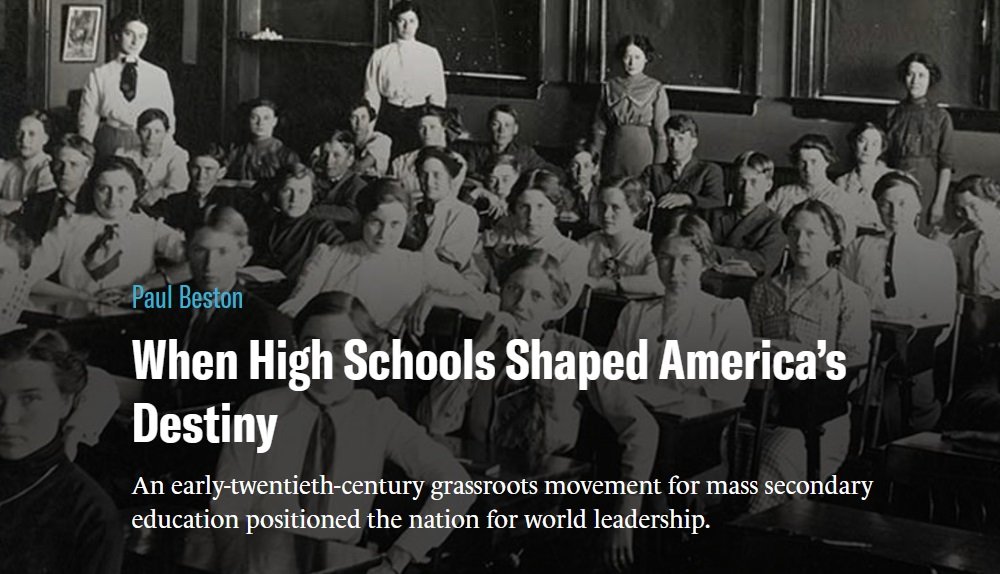
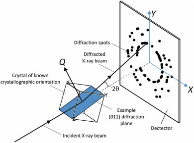
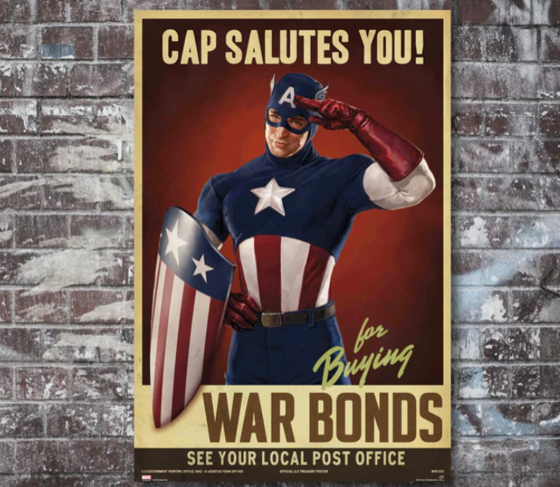
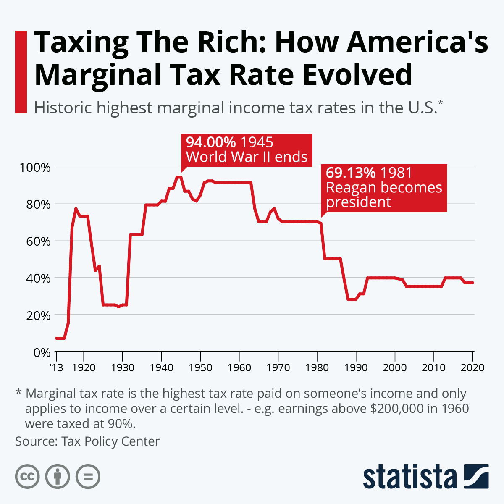
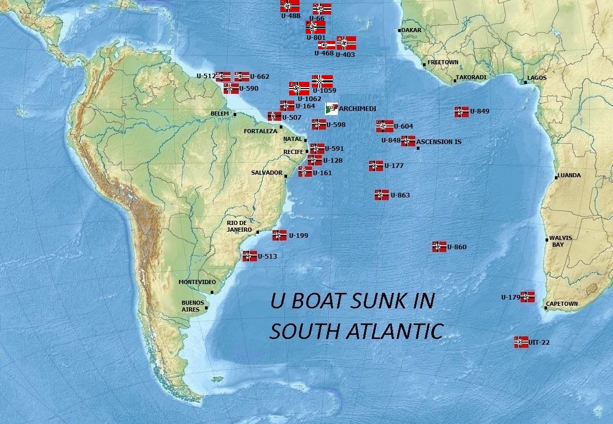
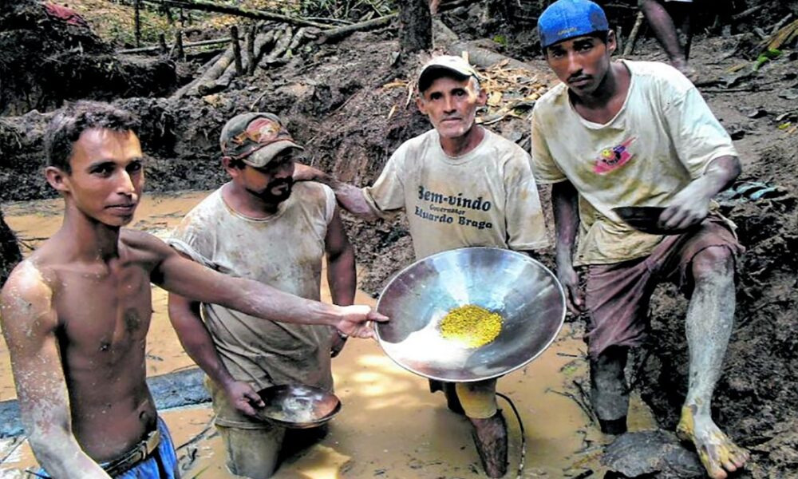

WW2의 수정 이야기 (5) - 기초 학력과 브라질
게시: 2024-10-24T06:30:06+09:00
<학교, 공장, 그리고 전쟁> 미육군 통신사령부에서 무전기용 수정 박판 대량 생산 임무를 받고 창설된 부대인 Quartz Crystal Section (QCS)는 몇몇 전자기 관련 박사님들의 도움만을 가지고 전쟁 특수 와중에도 일거리를 구하지 못한 사실상 실업자 신세의 공장주들과 노동자들을 빠른 시간 안에 전자부품용 수정 박판 제조 전문가로 탈바꿈 시켜야 했음. 이 엄두가 나지 않는 임무에 대해 QCS가 가진 자산은 몇몇 관련 기술 문서 뿐. 딱히 수정 가공 전문업체도 아닌 공장 사람들에게 수정의 압전 효과 및 가공 등에 대한 기술 문서 몇 개를 던져주고 알아서 수정 박판 만들어오라고 하면 과연 일이 제대로 돌아갔을까? 돌아갔음. 여기에는 두 가지 중요한 요소가 필요했음. 첫째, 자본주의적인 인센티브. 당시 QCS의 주문을 받아 수정 가공에 참여하려 했던 공장들은 서로 경쟁하며 국방성으로부터 입찰을 따내야 했던 입장. 만약 여기서 자기들이 수정 가공 능력이 있다는 것을 입증하지 못하면 이들은 또 다른 일거리를 찾아나서야 했고, 당장 직원들 월급도 제대로 주지 못할 판국. 이들은 나름대로 절박했고, 당장 돈의 노예였음. 무릇 당시 미국인들 유럽인들은 성경의 가르침대로 살아야 한다고 스스로들 떠들었지만 실제로는 돈이 시키는 대로 살았음. 그러니 어떻게든 그 기술 문서를 읽고 수정 박판 가공 기술을 익히고 또 개량했음. 둘째, 당시 미국의 노동자들은 세계에서 가장 잘 교육된 인력이었음. 1940년, 유럽에서 18세 청년 중 고등학교를 졸업한 비율은 20% 정도. 그러나 미국에서는 그 비율이 51%에 달했음. 우리가 학교에서 배우는 삼각함수나 물리 화학 등은 학교만 졸업하면 아무 쓸모가 없을 것 같지만 실은 그렇지 않음. 일단 따분한 기술 문서를 끝까지 다 읽고 거기에 사용되는 생소한 어휘를 이해하는 능력 자체가 필요함. 그리고 삼각함수 시험에서 100점 맞지는 못하더라도, 최소한 sine cosine이 뭔지는 대충 이해를 해야 모르는 부분을 찾아볼 수라도 있는 거임. 당시 QCS로부터 박사님들과 엔지니어들이 작성해놓은 수정 가공 관련 기술 문서를 받아든 공장 노동자들 모두가 고등학교 졸업자는 아니었겠으나, 그렇게 미국의 기초 학력이 높았기 때문에 이 모든 것이 가능했던 것. 실제로 이 공장 사람들은 그런 문서를 탐독하며 관련 기술을 익혔을 뿐만 아니라, 나름대로의 know-how를 살려 일부 공정을 개선하기까지 함. 제조업이 발달하려면 국민들의 교육 정도가 확실히 중요함.

(그러니 중고등학교 교육을 대학 입시 외에는 아무 쓸모 없는 시간 낭비로 만들어서는 안 되고 다들 소중히 다루고 개선시켜야 함.)
물론 거기에 기존부터 수정 가공 및 수정 공진기 제조를 해오던 벨(Bell) 연구소 같은 전문기업들의 일부 도움도 있었음. 그리고 국방성에서 뿌려대는 돈을 투입하니 기술 진보도 유례 없는 속도로 이루어짐. 가령 전에 항상 골칫덩어리였던, 어느 각도로 깎아야 할지 수정 결정면을 정하는 문제에 일부 병원에서나 쓰이던 X-ray를 이용하는 방법이 새로 개발됨. 이건 산업용으로 X-ray가 사용된 최초의 사례. 물론 이 모든 것은 미국의 탄탄한 공업력과 기술력이 있었기 때문에 가능했음. 가령 X-ray 장비는 General Electric사와 북미 Phillips사에 주문하여 생산하게 함. 이때 이 두 회사가 만든 X-ray 장비는 향후 40년 간 거의 원형 그대로 계속 사용됨.

(X-ray로 결정체를 연구하는 학문을 X-ray crystallography라고 하는데, 이건 보석 연구가 아니라 다양한 물질들, 가령 단백질 같은 것들의 연구에도 활발하게 사용된다고.)
이런 식으로 1943년까지는 미국 전역의 약 130여개의 제조사가 QCS와 계약을 맺고 수정 박판 생산에 돌입. 1939년까지만 해도 미국 전체에서 수정 박판 제조업에서 일하는 노동자의 숫자는 다 합해도 100명 정도. 가령 그나마 큰 편이라고 하던 Bliley사와 Monito Piezo사는 직원수가 각각 15명이었음. 그러나 41년~45년 동안 Bliley사에서만 1400명 이상이 수정 박판 제조를 위해 고용됨. Monitor사는 2000명을 고용했고 Scientific Radio Products사는 새 공장을 짓고 750명을 고용. 그 외에도 많은 회사들이 500명 이상을 고용하여 수정 박판을 생산. 이렇게 직접 수정 박판 제조하는 회사들 뿐만 아니라, 그 생산을 지원하는 업체들, 가령 다이아몬드 톱 제조업체, 연마제 제조업체, 전극 제조업체, 베릴륨-구리 합금 스프링 제조업체, 니켈 도금 나사못 제조업체 등등 많은 회사들이 더 많은 노동자들을 고용하여 생산 활동에 나섬. 누가 이 많은 비용을 댔을까? 일단은 국채. 영화 The First Avenger에서 캡틴 아메리카가 국채 판매 행사에 나섰던 것을 모두 기억하실 거임. 그 국채는 결국 전쟁이 끝난 뒤 부자들이 최고 세율 90%가 넘는 소득세를 내며 갚음. 결국 부자들이 전쟁 비용을 대고, 가난한 이들은 병정 노릇을 하든 군수품 공장에서 일하든 국가로부터 월급을 받는 것이 전쟁. 그래서 많은 경우 전쟁이 끝나고나면 빈부격차가 많이 줄어듬. 현재 우크라이나 침공 전쟁을 벌이고 있는 러시아에서도 비슷한 현상이 벌어지고 있다고.


(WW2 당시 쌓인 미국의 엄청난 국가 채무는 향후 수십 년간 미국의 부자들이 갚아나감. 실은 WW2의 연합국들, 가령 영국, 심지어 냉전 대치 상태였던 소련조차 금괴나 항구 사용료 차감 등 다양한 방법으로 미국에게 채무를 갚았음. 저런 엄청나게 높은 소득세율을 대폭 낮춘 것은 1980년대 레이건 대통령 시절부터. 그때부터 미국의 빈부격차가 확 벌어지기 시작함.)
<드넓은 미국 땅에도 없는 자원이 있다> 이처럼 사람과 돈, 물자가 넘쳐나던 미국조차 수정 박판 제조에 있어 마음대로 안 되는 것이 있긴 했음. 바로 수정 원석. 물론 미국에서도 수정 원석이 나오기는 했지만 전기회로 부품으로 쓸 정도의 등급인 수정 원석을 어느 정도 규모로 공급해줄 곳은 WW2 당시 전세계에 딱 한 군데였음. 바로 브라질. 세계가 평화롭고 수정 박판이 들어간 무전기를 필요로 하는 사람들이 몇몇 아마추어 무전통신 동호회 회원들 뿐인 시절에는 그게 아무 문제가 되지 않았음. 그냥 브라질에서 수입해오면 되니까. 그러나 전쟁이 벌어지고 대서양 곳곳에 유보트가 헤엄쳐 다니면서 문제가 심각해짐.

(유럽 인근 뿐만 아니라 브라질 연안에서도 독일 유보트는 맹활약. 저 지도는 남대서양에서 유보트들이 격침된 곳을 표시한 것.)
미국이 참전하기 전인 1939년 초, 그동안 미국이 수입하여 창고에 쌓아둔 브라질산 수정 원석의 재고량은 대략 4.5톤. 전쟁이 벌어지고 영국으로부터 군수품 주문이 쏟아져 들어오자 미국은 브라질로부터의 수정 원석 수입을 미친 듯이 늘림. 1939년 한 해에만 30톤 넘게 수입했고 1940년에는 57톤이 넘었음. 그 막대한 양의 원석 중 검사 결과 전자부품 등급의 원석은 전체의 약 10%에 불과. 그러나 독일 유보트에 의해 혹시라도 수입선이 끊길까 전전긍긍했던 미국은 1941년 말 참전 이전부터도 브라질에서 수정을 닥치는 대로 긁어모아 수입했음.

(이 분들이 garimpeiro인데 (아마 가힘페이호라고 읽을 듯), 아마 아 분들은 사금을 캐는 분들인 듯)
그러나 정작 문제가 된 것은 독일 유보트가 아니었음. 그냥 예상을 뛰어넘는 엄청난 수요 자체와 함께, 영세한 브라질의 수정 원석 채굴 방식 자체가 문제였음. 수정은 특성상 산업화된 광산에서 갱도를 파고 채굴하는 것이 아니라, garimpeiro (그냥 광부라는 뜻)이라고 불리는 개인업자들이 고원지대를 헤매다니며 찾아내는 방식으로 채굴되었음. 덕분에 1942년 말이 되자 브라질에서도 자연 결정면을 가진 수정 원석 (faced quartz)가 바닥이 남. 이제 자연 결정면이 없는 원석 (unfaced quartz)를 써야 했는데, 하늘이 미국을 도왔는지 X-ray를 이용하여 수정의 결정면 방향을 확인할 수 있는 방법이 개발된 것이 딱 이 시기. 덕분에 전에는 활용을 못했던 수정 원석도 활용하여 수정 박판 제조를 시작. 하지만 원자재 문제는 기술 혁신만으로 해결할 수는 없었음. 미국은 브라질에서의 수정 수입을 효율화하기 위해 골머리를 앓았는데.... (다음 주에 계속)